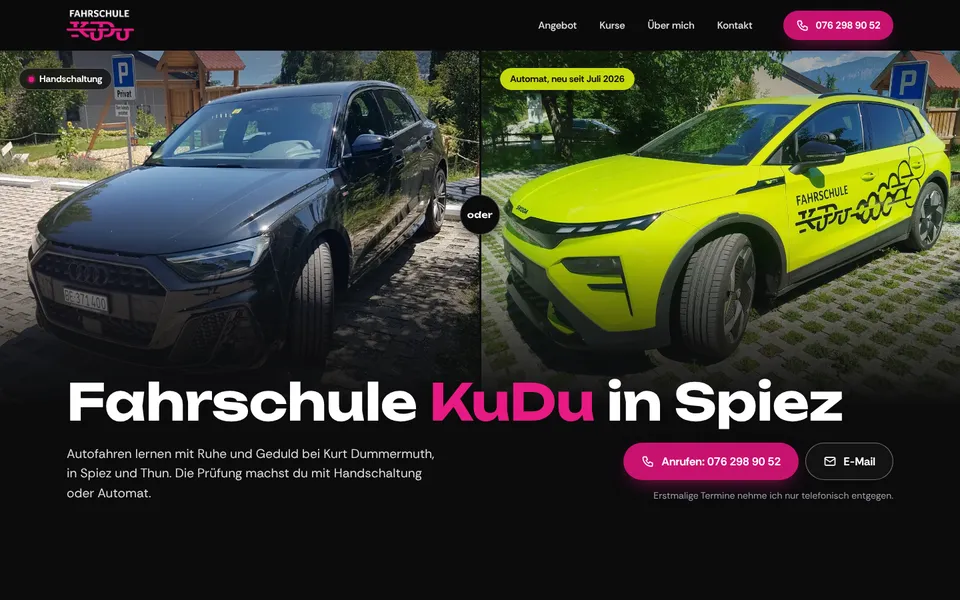
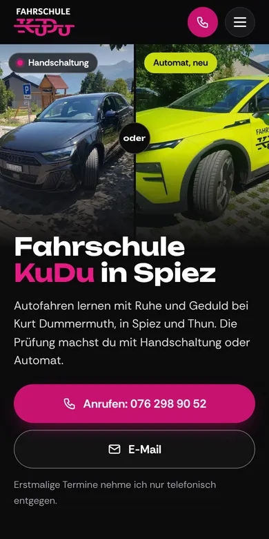

Design A
Schwarz und Limette
Dunkel und selbstbewusst in den Farben Ihrer beiden Fahrschulautos: Gleich zu Beginn stehen das schwarze Auto mit Handschaltung und das limettengrüne mit Automat nebeneinander. Dazu pinke Titel, klare Preise, der nächste VKU-Termin und die bestandenen Prüfungen 2026.
- Dunkel
- Zwei Autos
- Kräftig